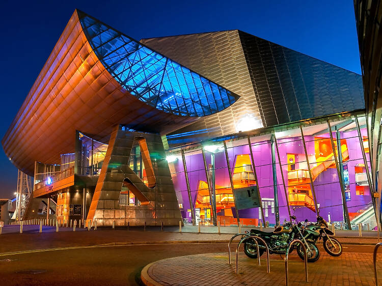

Manchester, a city in northwest England, has a rich history and vibrant many culture, making it an attractive destination for tourists.There are several reasons why one should visit Manchester, including its historical significance, diverse arts scene, and exciting sports events.Manchester was at the beginning of the Industrial Revolution, giving it a rich industrial heritage.Manchester boasts a thriving arts and culture scene, with numerous galleries, museums,and theaters. Some of the top cultural attractions in the city include the Whitworth Art Gallery, the Manchester Art Gallery, and the Royal Exchange Theatre. The city had a major influence on the development of the modern world and was once the centre of power within the British Empire. A trip to Manchester provides an exceptional chance to delve into the city's industrial history via its museums, historic structures, and famous sites like the John Rylands Library, the Manchester Art Gallery, and the Museum of Science and Industry.
Manchester, England's John Rylands Library is an important historical and cultural institution. Enriqueta Rylands, the widow of prosperous textile merchant John Rylands, created it in 1900.The library draws academics, researchers, and tourists from all over the world with its vast collection of rare books, manuscripts, and historical artefacts.
Manchester's multicultural population helps to create the city's different lifestyle. The city is a multicultural haven, as seen by the abundance of foreign foods, festivals celebrating other cultures, as well as welcoming community activities.Manchester, an English city in the northwest, is well known for its extensive and varied cultural history. The city is a developing and active centre of culture because of its significant support to a range of industries, including sports, music, art, and literature.
